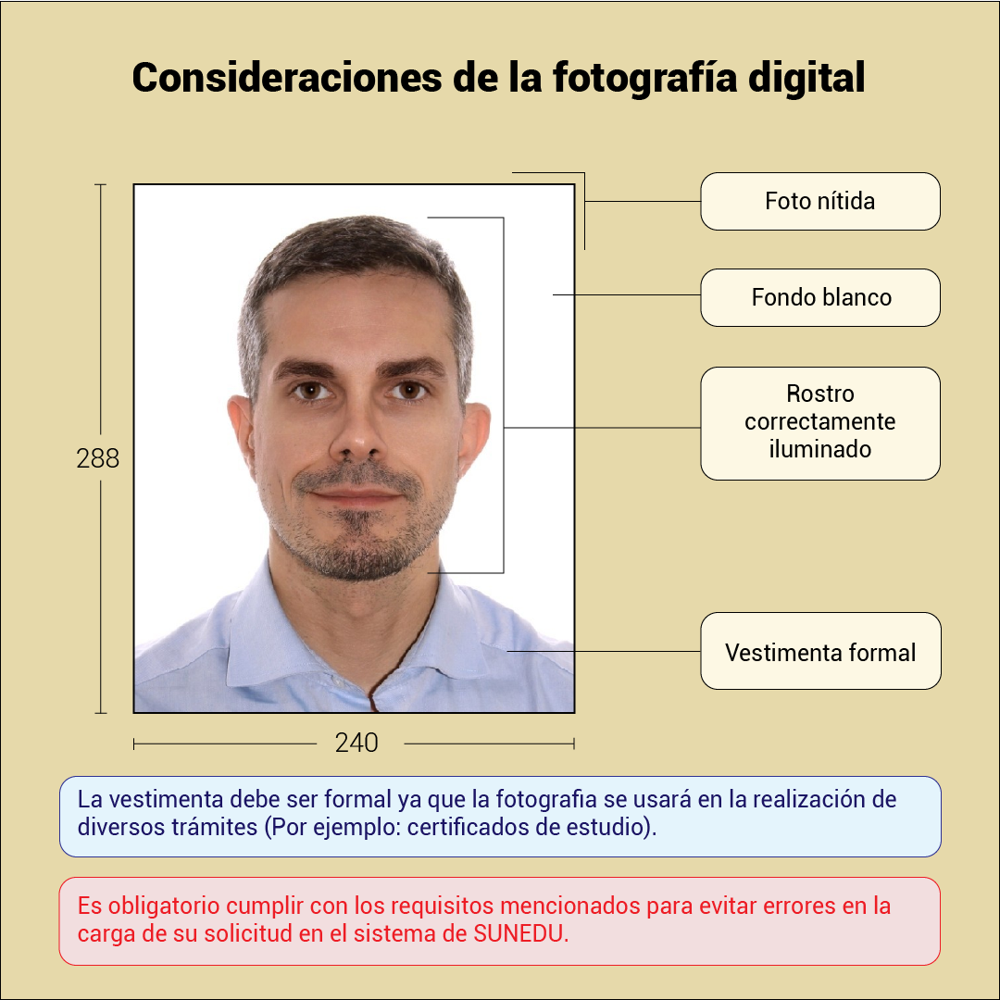

Inicio · Guía
Guía de Trámites Administrativos
Procesos administrativos y normativas explicados de forma clara para gestionar tu vida académica en la FC-UNI.
1. Información Académica General
Aspectos clave sobre el régimen de créditos y los cursos de nivelación de verano en la FC-UNI.
2. Catálogo Digital de Trámites Académicos
Consulta en tiempo real los requisitos, costos y flujos de todos los trámites de la Facultad de Ciencias.
Ficha Socioeconómica
La Ficha Socioeconómica es un registro detallado de las condiciones socioeconómicas, de vivienda, salud y composición familiar de los estudiantes de la UNI. Es administrada por la Oficina de Bienestar Universitario y sirve como insumo obligatorio para determinar la categorización de pago y prioridades de matrícula.
Instrucciones para Completar la Ficha
- Ingresa al portal web integrado de la universidad INTRALU en alumnos.uni.edu.pe con tus credenciales institucionales.
- Dirígete a la sección Configuración → Socioeconómico.
- Completa todos los campos con datos reales y actualizados de tu hogar (ingresos familiares consolidados, gastos mensuales, tipo de vivienda, etc.).
- Carga los documentos sustentatorios solicitados en formato PDF (boletas de pago, recibos de servicios, constancia de vivienda, etc.).
- Finaliza el trámite haciendo clic en "Enviar" para la evaluación de la Oficina de Bienestar Universitario.
⚠️ Bloqueo de Matrícula
La actualización de la Ficha Socioeconómica es obligatoria. Si no la actualizas en las fechas programadas antes de iniciar el ciclo lectivo, el sistema integrado bloqueará automáticamente tu prioridad de matrícula, lo que impedirá tu inscripción a tiempo y te dejará con horarios desfavorables o sin vacantes en tus asignaturas principales.
Reserva de Matrícula
Procedimiento formal que permite al estudiante suspender temporalmente sus estudios en el ciclo vigente, asegurando la conservación de su vacante y evitando ser calificado como alumno inactivo o desaprobado en las asignaturas matriculadas.
Pasos para Solicitar la Reserva
- Ingresa a tu cuenta de INTRALU y en la sección de pagos genera la orden por concepto de "Reserva de Matrícula" (tasa de S/ 35.00). Realiza el pago en las entidades recaudadoras autorizadas.
- Asegúrate de no registrar deudas de libros en la biblioteca central o de facultad, ni materiales en los laboratorios de física, química o computación (verificación de no adeudo).
- Presenta una solicitud simple dirigida al Decano de la Facultad a través de la Mesa de Partes Virtual de la FC, adjuntando:
- Comprobante de pago de la tasa.
- Carta de solicitud de reserva explicando brevemente los motivos (salud, trabajo, etc.) debidamente firmada.
- Si aplica, documentación de respaldo (ej. certificado médico visado por el Centro Médico de la UNI en caso de salud).
💡 Reserva para Ingresantes
Los alumnos ingresantes (primer ciclo) también tienen derecho a reservar su matrícula, pero el trámite debe gestionarse exclusivamente dentro de las fechas programadas de la matrícula especial de ingresantes en el calendario oficial de DIRCE.
Retiro de Asignatura o Ciclo
Trámite mediante el cual el estudiante solicita dejar de cursar una o más materias específicas (retiro de asignatura) o anular la matrícula de la totalidad del semestre académico (retiro de ciclo) sin que las notas afecten su promedio ponderado acumulado ni cuenten como oportunidades académicas perdidas (bicas o tricas).
Tipos de Retiro y Plazos
- Retiro de Asignatura: Permite desvincularte de materias específicas. El plazo máximo vence al término de la sexta (06) semana de clases del ciclo correspondiente.
Restricción: No puedes quedar matriculado en menos de 12 créditos en el ciclo vigente, salvo que sea el único curso activo que tengas. - Retiro de Ciclo: Anula por completo tu matrícula del semestre actual. El plazo para solicitarlo vence al finalizar la novena (09) semana de clases (justo después de los exámenes parciales).
Nota: Este proceso no exime al alumno de los pagos o tasas administrativas realizados al inicio del ciclo.
Requisitos del Trámite
- Ingresar al sistema INTRALU y registrar la solicitud de retiro en el módulo de trámites académicos.
- En caso de no estar habilitado en INTRALU, deberás remitir una solicitud simple dirigida al Director de tu Escuela Profesional mediante la Mesa de Partes de la Facultad, justificando los motivos del retiro.
Reincorporación Académica
Procedimiento administrativo obligatorio dirigido a estudiantes que habiendo reservado formalmente su matrícula, o habiendo dejado de matricularse voluntariamente por uno o más semestres, deciden reanudar sus estudios en la Facultad de Ciencias para el ciclo entrante.
Requisitos y Flujo
- Genera la orden de pago por "Derecho de Reincorporación" (S/ 50.00) en el sistema INTRALU y realiza el abono en los bancos autorizados.
- Verifica en tu intranet que no tengas multas electorales pendientes, deudas de biblioteca o reactivos de laboratorio.
- Presenta la solicitud dirigida al Decano mediante la Mesa de Partes de la Facultad adjuntando el comprobante de pago de la tasa y copia simple de tu DNI o carné universitario anterior.
- Registros Académicos (AERA) evaluará tu situación y registrará tu reactivación en el sistema para que figures en el padrón del siguiente proceso de matrícula.
⚠️ Plazo Límite de Inactividad
De acuerdo con el Estatuto de la UNI, el tiempo total máximo acumulable de suspensión voluntaria de estudios sin perder la condición de alumno regular es de seis (6) semestres académicos (3 años). Superado este plazo, el estudiante pierde la vacante y debe rendir un examen de reingreso especial.
Actualización de Fotografía
La fotografía digital se utiliza para diversos trámites del estudiante a lo largo de su instancia en la UNI, la fotografía se mostrará en su intranet, también se usará para la emisión del carné universitario y la impresión de certificados.
Opciones para realizar el trámite
⚠️ RECUERDE
No se aceptan fotos escaneadas, fotos antiguas, ni fotos de baja nitidez. La fotografía que no cumpla con las características mencionadas no será procesada en el sistema.
Modelo oficial y especificaciones de encuadre para la foto:

Carné Universitario Regular
Procedimiento a través del cual el estudiante por intermedio de la Facultad, solicita carné universitario, para su identificación en la universidad y que permitirá acceder al medio pasaje en transporte público. La solicitud es registrada en el sistema de la Superintendencia Nacional de Educación Superior Universitaria (SUNEDU) a solicitud de la Facultad. El entregable es el carné universitario, el cual es de vigencia determinada anual. El monto que el estudiante abona a la cuenta de la UNI por la tramitación del carné, es fijado por la SUNEDU en su Texto Único de Procedimientos Administrativos (TUPA) y transferido a su cuenta para la emisión del carné.
Requisitos del Trámite
- Estar matriculado en el periodo académico vigente.
- Pago por el monto correspondiente a S/ 17.70 (generado en INTRALU).
- Para realizar el trámite el estudiante debe contar con sus datos actualizados y contar con fotografía en la INTRANET de la UNI (INTRALU).
- El plazo para la entrega del carné universitario depende estrictamente de la programación realizada por la SUNEDU.
⚠️ RECUERDE
- Debe rellenar la ficha de datos desde la intranet de estudiante (INTRALU).
- Cargar la imagen del anverso y reverso de su DNI (imagen nítida).
- No olvide ingresar su dirección actual, número de celular, fecha de nacimiento, género y ubigeo.
Carné Universitario Duplicado
Procedimiento a través del cual, el estudiante que previamente contaba con carné universitario; a través de la Facultad solicita duplicado de carné por motivo de robo o pérdida, para su identificación en la universidad y que permitirá acceder al medio pasaje en transporte público. La solicitud es registrada en el sistema de la Superintendencia Nacional de Educación Superior Universitaria (SUNEDU) a solicitud de la Facultad. El entregable es el duplicado de carné universitario, el cual es de vigencia determinada anual. El monto que el estudiante abona a la cuenta de la UNI por la tramitación del carné, es fijado por la SUNEDU en su Texto Único de Procedimientos Administrativos (TUPA) y transferido a su cuenta para la emisión del carné.
Requisitos del Trámite
- Solicitud simple dirigida al decano, según formulario oficial.
- Denuncia policial de pérdida o robo de documentos.
- Para realizar el trámite el estudiante debe contar con sus datos actualizados y contar con fotografía en la INTRANET de la UNI (INTRALU).
- El pago por concepto de duplicado de carné es de S/ 58.00 (generado en INTRALU).
- El plazo para la entrega del carné universitario depende estrictamente de la programación realizada por la SUNEDU.
⚠️ RECUERDE
- El pago por derecho de trámite se realiza desde la intranet del estudiante (INTRALU).
- El carné duplicado tendrá la misma fotografía que el carné emitido anteriormente.
Certificado de Estudios Simple
Procedimiento por el cual se expide el certificado de estudios simple que detalla las asignaturas cursadas, códigos, créditos y las notas obtenidas. Puede ser solicitado por estudiantes o egresados para fines académicos o personales.
Requisitos del Trámite
- Tener fotografía digital formal y actualizada en el portal de INTRALU.
- Actualizar los datos personales en la ficha digital de INTRALU.
- Realizar el pago de S/ 84.70 (orden de pago generada vía INTRALU).
- No presentar deudas pendientes con la Facultad (verificación de no adeudos).
Horario de Atención Administrativa
Lunes a Viernes de 8:00 a 13:00 y de 14:00 a 15:30.
Certificado de Estudios Depurado
Expedición de certificado oficial que detalla los códigos, nombres de asignaturas, créditos y la nota obtenida al décimo ciclo académico aprobado, de acuerdo con el reglamento de la Facultad. Usualmente solicitado por egresados para trámites formales.
Requisitos del Trámite
- Pago por derecho de tramitación de S/ 83.10 (orden de pago vía INTRALU).
- No registrar adeudos pendientes con la institución (constancia de no adeudos).
Horario de Atención Administrativa
Lunes a Viernes de 8:00 a 13:00 y de 14:00 a 15:30.
Constancia de Egresado
Documento oficial que acredita que el alumno ha cursado y aprobado el 100% de los créditos exigidos en su respectivo plan de estudios profesionales de la Facultad de Ciencias.
Requisitos del Trámite
- Realizar el pago de S/ 80.00 a través de la orden de pago generada en INTRALU.
- La fotografía cargada en el sistema debe ser formal, con vestimenta adecuada (saco y corbata en varones, sastre en mujeres).
- El encuadre de la fotografía debe centrarse estrictamente en el rostro.
⚠️ Requisito de Fotografía
Para constancias y certificados, la fotografía debe ser tomada con vestimenta formal. No se aceptan retratos casuales, autofotos (selfies), escaneados de fotos impresas ni archivos de baja resolución.
Constancia de Primera Matrícula
Documento oficial que certifica el inicio formal de los estudios universitarios. Es otorgado por la DIRCE y refrendado por la Secretaría General de la Universidad. Detalla las asignaturas inscritas por primera vez, con códigos, nombres, créditos y ciclo correspondiente (el cual puede variar si se solicitó reserva de matrícula).
Requisitos del Trámite
- Realizar el pago de S/ 15.00 generable en INTRALU.
- Presentar la constancia de no registrar deudas en la facultad o dependencias centrales de la UNI.
Horario de Atención
Lunes a Viernes de 9:00 am a 4:00 pm.
Constancia de No Adeudos (Pregrado)
Acredita oficialmente que el estudiante de pregrado no registra deudas pendientes de devolución de materiales de laboratorio, reactivos, libros de biblioteca central o de facultad, ni multas por inasistencias a elecciones o procesos de sufragio.
Requisitos del Trámite
- No adeudar ningún implemento en laboratorios o bibliografía.
- Solicitud interna procesada por los sistemas informáticos de la Facultad.
Horario de Atención
Lunes a Viernes de 9:00 am a 4:00 pm.
Constancia de No Adeudo (Posgrado)
Documento que acredita que el estudiante de la Sección de Posgrado de la Facultad de Ciencias no mantiene deudas de reactivos, libros, equipamiento u otros conceptos con la Universidad.
Requisitos del Trámite
- Presentar solicitud en original y copia a la Mesa de Partes de DIRCE, dirigida al Decano de la Facultad o al Rector de la UNI.
- Adjuntar el recibo original de pago emitido por Caja UNI (según las tasas vigentes establecidas por la facultad y la sección de posgrado).
- El trámite es estrictamente personal. En caso de terceros, deberán presentar carta poder legalizada notarialmente.
- Si no cuenta con código de posgrado registrado, debe adjuntar la constancia de ingreso expedida por la facultad.
Horario de Atención
Lunes a Viernes de 9:00 am a 4:00 pm.
Constancia de Equivalencia Internacional
Documento oficial que certifica el Promedio Ponderado acumulado al milésimo obtenido por el estudiante durante su carrera y su equivalencia con escalas académicas internacionales. Muestra la equivalencia vigesimal y literal aprobada por Resolución Rectoral, incluyendo la equivalencia oficial con la escala GPA (1 al 4) útil para postular a becas y posgrados en el extranjero.
Requisitos del Trámite
- Registrar la solicitud en línea a través del portal de intranet del estudiante (INTRALU).
- Realizar el pago correspondiente de la tasa de S/ 54.00 en línea vía intranet.
- Mantener la información personal y académica totalmente actualizada en el sistema.
Horario de Atención
Lunes a Viernes de 8:00 a 13:00 y de 14:00 a 15:30.
Grado Académico de Bachiller
Trámite por el cual el egresado que ha concluido el 100% de su plan de estudios solicita la obtención del Grado Académico de Bachiller en Ciencias, habiendo aprobado un trabajo de investigación y acreditado la suficiencia de un idioma extranjero.
Requisitos del Trámite
- Presentar la solicitud dirigida al Decano de la Facultad.
- Adjuntar cuatro (04) fotografías tamaño pasaporte, a color, con fondo blanco y vestimenta formal.
- Declaración jurada de cumplimiento de requisitos y condiciones previas.
- Efectuar el pago de S/ 445.70 en Caja de la UNI (adjuntar comprobante de pago).
Condiciones Previas Obligatorias
- Haber concluido el Plan de Estudios de la respectiva Escuela Profesional (Bachiller en Ciencias exige un mínimo de **208 créditos**).
- Haber aprobado un trabajo de investigación y registrado el mismo.
- Tener conocimiento básico de un idioma extranjero (de preferencia inglés) o lengua nativa, mediante la aprobación de la traducción de un documento de mínimo dos (2) páginas (evaluación oral y escrita certificada por el Centro de Idiomas de la UNI).
- No estar sujeto a ninguna medida disciplinaria en la universidad.
- No presentar deudas pendientes (económicas, de libros o materiales) en la facultad o dependencias de la UNI.
Modalidad de Pago
Pago en Caja de la Entidad con tarjeta de débito/crédito, o depósito en agencias bancarias autorizadas (BCP, Scotiabank, Niubiz) mediante orden de pago generada por la Facultad.
Horario de Atención
Lunes a Viernes de 8:00 a 13:00 y de 14:00 a 15:30.
Título Profesional por Tesis
Procedimiento por el cual el egresado o estudiante de los dos últimos ciclos inscribe su tema de tesis ante la Comisión de Grados y Títulos y solicita la obtención del título profesional tras sustentar y aprobar su tesis de investigación.
Requisitos del Trámite
- Solicitud simple dirigida al Decano de la Facultad.
- Cargar el archivo digital de la tesis aprobada (formato PDF) de acuerdo con las directrices de Cybertesis / Repositorio Institucional de la UNI.
- Presentar un (01) ejemplar empastado para la biblioteca de la Facultad tras la aprobación de la sustentación.
- Cinco (05) fotografías tamaño pasaporte a color, con fondo blanco y vestimenta formal.
- Declaración jurada de cumplimiento de requisitos y condiciones previas.
- Haber obtenido previamente el grado académico de Bachiller en la UNI.
- Contar con nota aprobatoria en la sustentación pública del trabajo de tesis.
- No registrar adeudos ni sanciones disciplinarias en la universidad.
Monto y Tasas
- Primera postulación: S/ 1161.80
- Segunda postulación a más: S/ 1801.80
Horario de Atención
Lunes a Viernes de 8:00 a 13:00 y de 14:00 a 15:30.
Título por Suficiencia Profesional
Procedimiento orientado a bachilleres egresados de la UNI que cuenten con un mínimo de tres (3) años de experiencia laboral calificada en labores propias de su especialidad (contados desde la obtención del Bachiller). Se solicita el título profesional sustentando un informe documentado de suficiencia y experiencia en su campo.
Requisitos del Trámite
- Solicitud simple dirigida al Decano de la Facultad.
- Cargar el Informe de Suficiencia Profesional en formato digital (PDF) de acuerdo con las especificaciones de Cybertesis / Repositorio Institucional.
- Presentar un (01) ejemplar empastado para el archivo documentario de la Facultad tras la aprobación final.
- Adjuntar cinco (05) fotografías tamaño pasaporte a color, con fondo blanco y vestimenta formal.
- Declaración jurada de cumplimiento de requisitos.
- Haber obtenido el grado de Bachiller en la UNI y Acreditar el tiempo de experiencia laboral.
- Tener aprobado el informe y su correspondiente evaluación.
- No tener adeudos ni sanciones vigentes en la institución.
Horario de Atención
Lunes a Viernes de 8:00 a 13:00 y de 14:00 a 15:30.
3. Contactos Administrativos Clave
Canales oficiales para absolver consultas sobre trámites, constancias y tutoría.
Emisión de boletas de notas, constancias de estudio, promedios acumulados y prioridad de matrícula.
Apoyo pedagógico, consejería curricular, y acompañamiento académico frente a dificultades de rendimiento.
Teléfono: (01) 481-1070 anexo 5020 / 5023
Ingreso de solicitudes formales (retiro de ciclo, reincorporación, traslados internos de carrera).
Plataforma oficial para ingresar solicitudes digitales (FUT), retiros extraordinarios de ciclo, reincorporaciones y expedientes académicos.
Evaluación socioeconómica, recategorización de escala de pago, examen médico obligatorio, comedor y asistencia social.
Restablecimiento de contraseñas de correo institucional (@uni.edu.pe), desbloqueo de cuenta en INTRALU y problemas de acceso a UNI Virtual.
Atención de resoluciones decanales/rectorales, jurados examinadores de tesis y acuerdos del Consejo de Facultad.
Teléfono: (01) 481-1070 anexo 3102 / 3104 / 3107
Ubicación: Pabellón Central, 2do piso. Oficina central de la UNI para tramitar el carné universitario oficial, consulta del Calendario de Actividades de DIRCE ↗ (ver RR 3678-2025 ↗), constancias centrales y búsqueda de estudiantes.